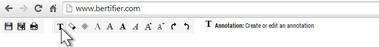

Take a look at this short video tutorial. Watch it HD full screen otherwise you won't see anything.
Copy your data to a Google Spreadsheet or Microsoft Excel and format it following this example.
If you do not use Google Spreadsheet, export your data table as a .CSV file.
Go on www.bertifier.com and do one of the following:
- CSV: Upload your .CSV file from your computer. Note that the separator for the .CSV must be a comma ",", while some languages such as French use the semicolon by default.
- Google Spreadsheet: Google spreadsheet links are not supported anymore.
- Refer to the video to use Bertifier.
- The standard starting point consists of designing roa and column headers and encoding all values using your preferred shape.
- Tooltips also appear at the top of the page when hovering a button.
- Then, there are no rules, and your painter's eye will do the rest.
Once you are done, you can add free floating annotations to your table using using the tools that appear at the top of the page when your mouse cursor enters this area:

You can then export your table in SVG format using the export icon that appears at the top of the page when your mouse cursor enters this area:
 You can then retouch it as you wish using any vector graphic editor.
You can then retouch it as you wish using any vector graphic editor.
All data you load in Bertifier will be kept confidential. We have no way of looking at it. The data you load in Bertifier is stored locally, on your computer, and does not circulate on the web.
Bertifier is the result of a research project conducted at Aviz, INRIA. You can find many more information and examples on the project page.
Bertifier is a prototype and we are aware of some limitations and problems that can occur. If you encounter any issue using the tool, we encourage you to email all co-authors of the project.